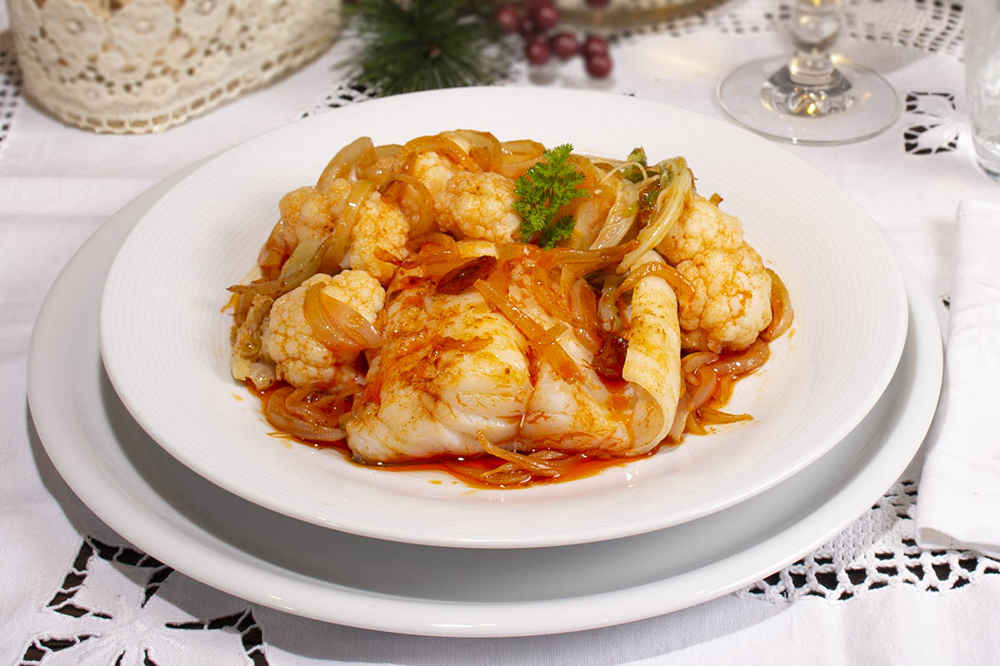

Bacalao con coliflor

El "bacalao con coliflor" es una sabrosa combinación de bacalao desalado y coliflor, cocinados juntos en una
mezcla de sabores delicados. El bacalao aporta su textura firme y su sabor distintivo, mientras que la
coliflor agrega suavidad y absorbe los matices de la salsa. Este plato resulta en una fusión armoniosa de
ingredientes que resalta la calidad de los productos frescos y es perfecto para quienes buscan una opción
saludable y deliciosa.
ChatGPT nos da un ejemplo
de receta.
Ingredientes para 4 personas:
- 4 lomos de bacalao desalado
- 1 coliflor, cortada en floretes
- 2 dientes de ajo, picados
- 1/4 taza de aceite de oliva virgen extra
- 1/2 taza de caldo de pescado
- Perejil fresco, picado
- Sal y pimienta al gusto
Ahora, las instrucciones:
-
Precalienta el horno a 180°C.
-
Cocina la coliflor: Hierve los floretes de coliflor en agua con sal hasta que estén tiernos.
Escúrrelos y resérvalos.
-
Sofríe el ajo: En una sartén grande, calienta el aceite de oliva y sofríe el ajo hasta que esté dorado.
-
Añade el bacalao: Coloca los lomos de bacalao en la sartén con el ajo. Cocina por unos minutos de cada
lado.
-
Incorpora la coliflor: Agrega los floretes de coliflor que habías reservado a la sartén y mezcla
suavemente.
-
Vierte el caldo: Añade el caldo de pescado y deja cocinar a fuego lento hasta que los ingredientes
estén bien integrados y el bacalao se desmenuce fácilmente.
-
Finaliza con perejil: Espolvorea con perejil fresco picado y ajusta el sazón con sal y pimienta al
gusto.
Sirve el bacalao con coliflor caliente y disfruta de esta combinación saludable y deliciosa. ¡Buen provecho!